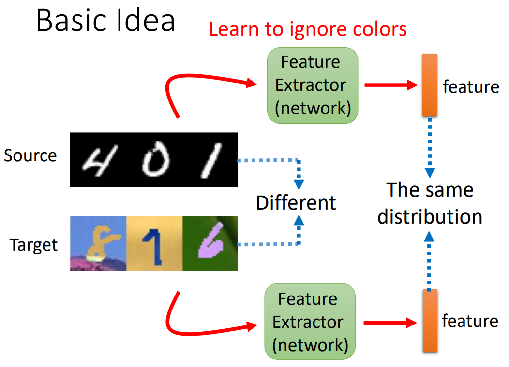
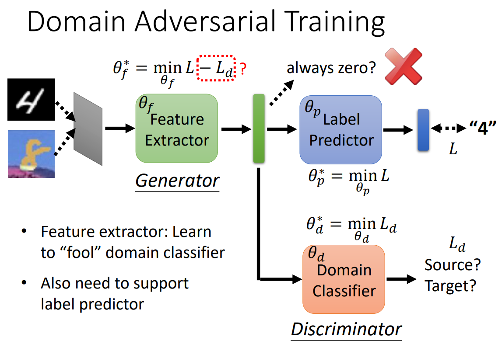
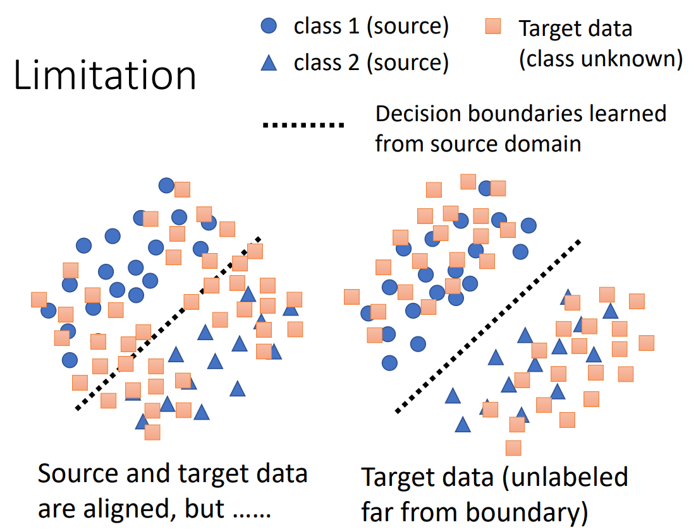
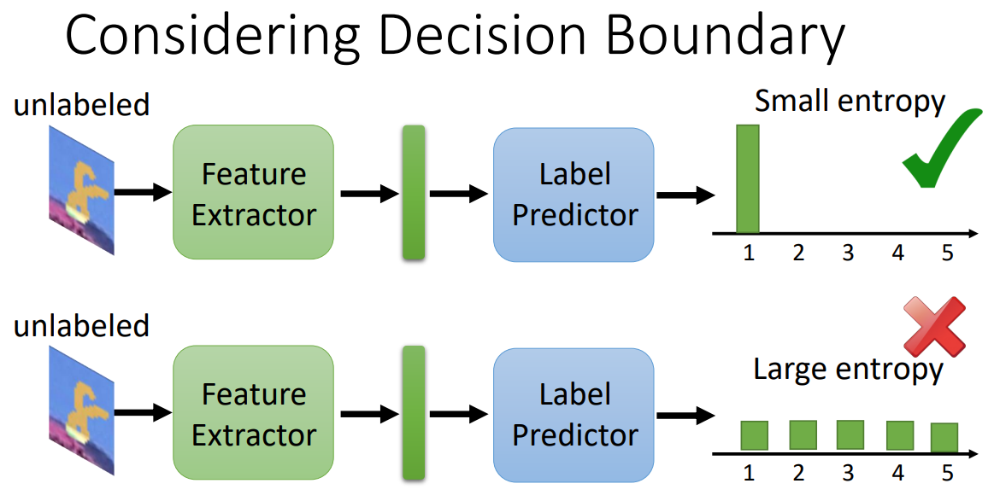
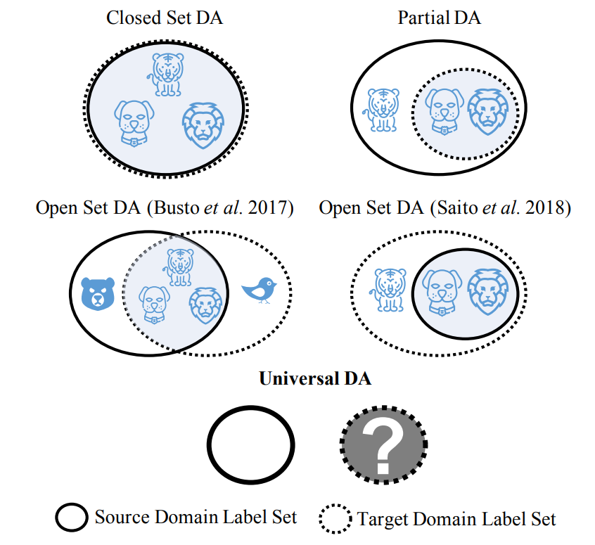
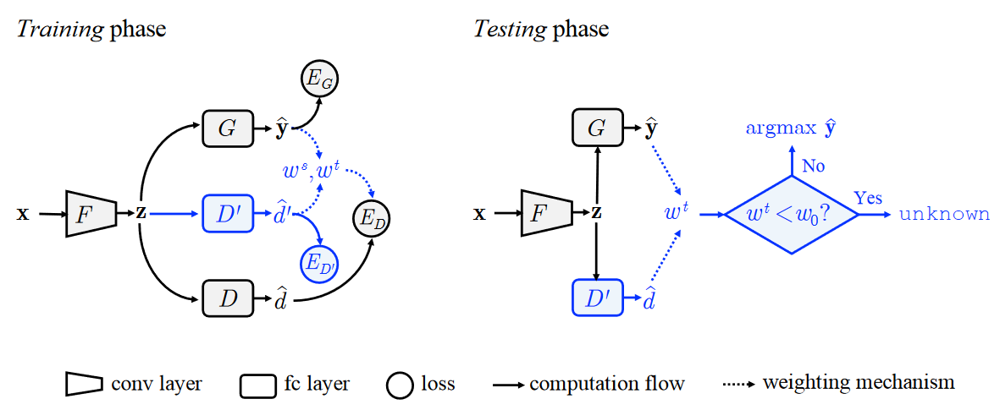
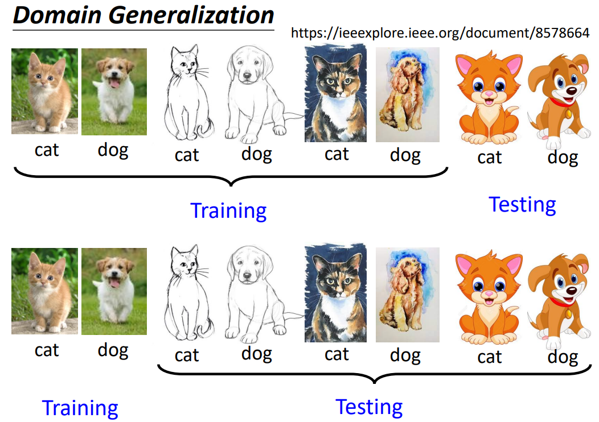
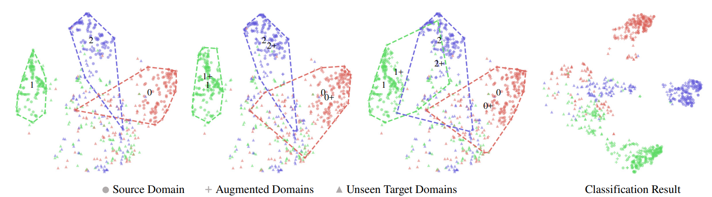

为什么需要Domain Adaptation#
在之前的课程的作业中，训练资料和测试资料的分布都是类似的，但是在很多实际任务中，会出现训练资料和测试资料的分布不一样的情况（就像平时的练习题和高考题目出题风格存在差异），称为Domain shift，那么此时模型的表现可能就会下降很多。比如我们在Mnist上训练手写数字分类模型后，如果测试资料是彩色数字，模型的正确率可能会从超过99%下降到不到60%。但是我们很多时候是没有大量带标注的、和测试资料分布相同的训练资料的，所以我们需要Domain Adaptation。

常见的Domain shift有三种类型
- Source Domain和Target Domain分布不同
- Target Domain中各个类型数据量和Source Domain不同，可能某个类型特别多
- Source Domain和Target Domain分布相似，但是两个Domain中相似的数据的标注不同
不同情境下的Domain Adaptation#
做Domain Adaptation时，我们对新的Domain可能有不同的“了解”程度，如下图所示，对新的Domain的了解程度从高到低为
- 新的Domain上有一点带标注的资料
- 新的Domain上有很多不带标注的资料
- 新的Domain上只有一点不带标注的资料
- 我们对新的Domain一无所知
新的Domain上有一点带标注的资料#
这种情况比较简单，只需要用Target Domain上的资料微调模型（一般训练几轮就可以了），就可以达到比较好的效果，但是要注意防止过拟合。
新的Domain上有很多不带标注的资料#
很多时候我们只知道新的Domain会有怎样的数据，而不知道这些数据应该有什么样的输出。对于这类问题，基本想法是训练一个特征提取器，希望Source Domain的数据和Target Domain上的数据在经过特征提取器后的分布是类似的。这样相当于是无视了Target Domain和Source Domain中的差异，只提取两个Domain上数据的共有特征。
为了训练特征提取器，我们还需要一个Domain Classifier来判断特征提取器的输出属于哪个Domain，其实这里就有点像GAN了。
但是，只让Source Domain的数据和Target Domain上的数据在经过特征提取器后的分布类似很可能会让特征提取器学会无论什么样的图片都输出相同的向量，所以我们在训练时还应该让提取出的特征经过输出层，在特征提取器的loss函数中加上输出标签和真实标签之间的loss，确保提取出的特征是有效的。
然后我们除了让Target Domain上的数据和Source Domain上的数据分布类似，我们也许还需要让Target Domain上的数据远离Source Domain中不同label的数据之间的边界。这个可以通过在训练特征提取器的时候尽可能使得提取出的特征经过label predictor后的分布比较集中（就是比较鲜明地属于某个类别），此时认为这个数据是远离Source Domain上的各类数据之间的边界的。
 在之前的讨论中，我们好像都默认了Source Domain和Target Domain的label的类型都是一样的，就像下图左上所示。但是实际上，Target Domain中的类别可能是Source Domain的子集（下图右上）；也可能是Target Domain和Source Domain有交集，但都有各自独特的label（下图左下）；也可能Source Domain是Target Domain的子集（下图右下）。那么如果此时用之前的方法做Domain Adaptation，可能会因为强行让两个Domain重合而导致错误，比如在下图右上的情况中把Target Domain中的狗认成老虎。
Universal Domain Adaptation (thecvf.com)中提出了Universal Domain Adapation的方法，简单来说就是需要判断Target Domain上的数据是不是属于Target Domain和Source Domain的共有类别内，如果不在共有类别内，则输出unknown。
新的Domain上只有一点不带标注的资料#
有时我们面对Target Domain时，我们甚至没有大量不带标注的资料，那此时怎么做Domain Adaptation呢？
https://arxiv.org/abs/1909.13231中提到，可以通过Test time training的方法实现Domain Adaptation，这个方法的大致思路在Test-Time Training - 知乎 (zhihu.com)内讲得挺清楚的。
我们对新的Domain一无所知#
有时我们甚至不知道Target Domain会有怎样的数据，就像高考前不知道今年会出什么怪题。
此时我们可以通过Domain Generalization的方法，在训练时就给予不同的Domain的资料，从而让模型学会无视Domain之间的差距，实现当新的Domain中的数据输入时，模型也能有很好的效果。
但是有时我们的训练资料只有一个Domain，而测试资料却有不同的Domain。https://arxiv.org/abs/2003.13216中提出我们可以尝试用数据增强产生多个Domain的训练资料，然后进行训练，从而实现Domain Generalization。
作者: 核子